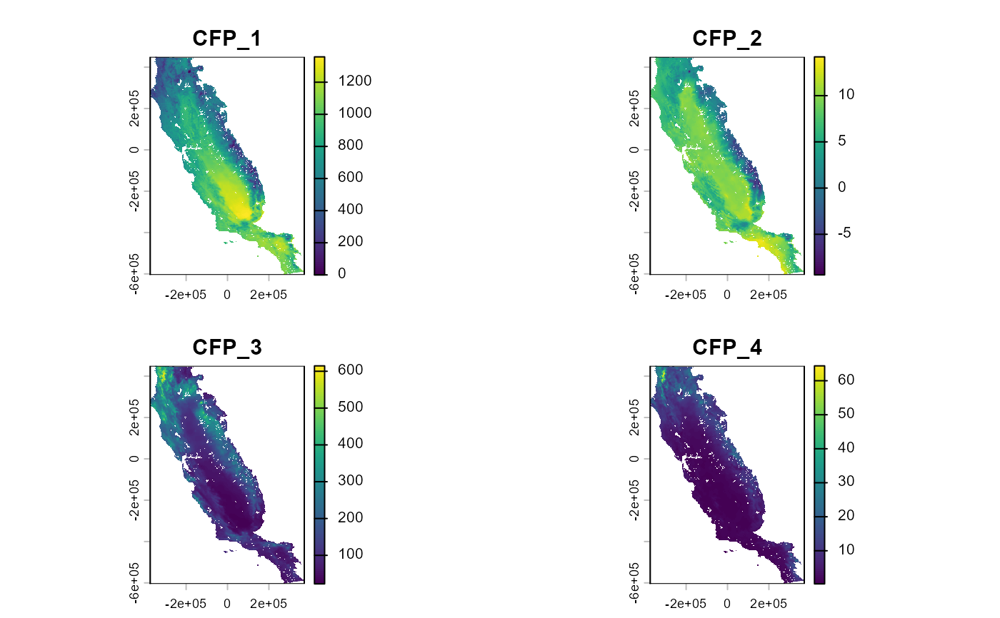
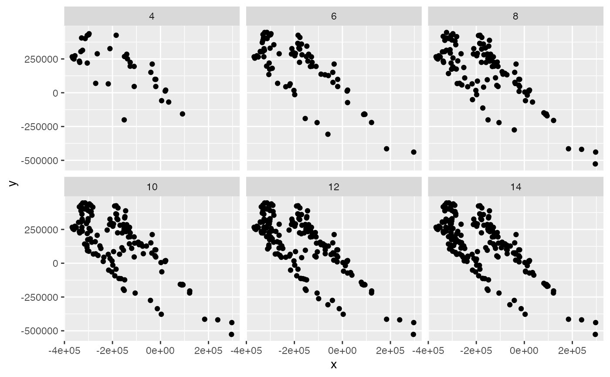

This function perform filtering on species occurrences based on their environmental conditions.
Arguments
- data
data.frame. Data.frame or tibble object with presences (or presence-absence) records, and coordinates
- x
character. Column name with spatial x coordinates
- y
character. Column name with spatial y coordinates
- id
character. Column names with rows id. It is important that each row has its own unique code.
- env_layer
SpatRaster. Raster variables that will be used to fit the model. Factor variables will be removed.
- nbins
integer. A number of classes used to split each environmental condition. It is possible to use single or several values. If several values are provided, the function will return a list with the results. Usage nbins = 5 or nbins = c(5, 10, 15)
Value
If one value is used to filter occurrence funtion will return a tibble object with filtered data. If several values are used to filter occurrences, the function will return a list of tibbles with filtered data.
Details
This function uses an approach adapted from the approach proposed by Varela et al. (2014). It consists of filtering occurrences in environmental space. First, a regular multidimensional grid is created in environmental space. This multidimensional grid is determined by the environmental variables (always use continuous variables) the grid cell size is defined by the number of bins, used for dividing variable range into interval classes (Varela et al. 2014; Castellanos et al., 2019). The number of bins is set in the "nbins" argument. Then, a single occurrence is randomly selected within each cell of the multidimensional grid. Consider that there is a trade-off between the number of bins and the number of filtered records because as the number of bins decreases, the cell size of the grids increases, and the number of filtered records decreases (Castellanos et al., 2019). occfilt_env works for any number of dimensions (variables) and with the original variables without performing a PCA beforehand.
The greater the number of predictor variables (i.e., the number of dimensions of the multidimensional environmental grid) and the greater the number of bins, the greater the time processing and the computer memory used. Therefore, it is recommended to use a small number of bins between 2-5 if more than ten variables are used.
Environmental filters are sensitive to the number of bins. A procedure for selecting the number
of bins was used by Velazco et al. (2020) and it is implemented in occfilt_select.
References
Castellanos, A. A., Huntley, J. W., Voelker, G., & Lawing, A. M. (2019). Environmental filtering improves ecological niche models across multiple scales. Methods in Ecology and Evolution, 10(4), 481-492. https://doi.org/10.1111/2041-210X.13142
Varela, S., Anderson, R. P., Garcia-Valdes, R., & Fernandez-Gonzalez, F. (2014). Environmental filters reduce the effects of sampling bias and improve predictions of ecological niche models. Ecography, 37, 1084-1091. https://doi.org/10.1111/j.1600-0587.2013.00441.x
Velazco, S. J. E., Svenning, J-C., Ribeiro, B. R., & Laureto, L. M. O. (2020). On opportunities and threats to conserve the phylogenetic diversity of Neotropical palms. Diversity and Distributions, 27, 512–523. https://doi.org/10.1111/ddi.13215
Examples
# \donttest{
require(terra)
require(dplyr)
require(ggplot2)
# Environmental variables
somevar <- system.file("external/somevar.tif", package = "flexsdm")
somevar <- terra::rast(somevar)
plot(somevar)

# Species occurrences
data("spp")
spp
#> # A tibble: 1,150 × 4
#> species x y pr_ab
#> <chr> <dbl> <dbl> <dbl>
#> 1 sp1 -5541. -145138. 0
#> 2 sp1 -51981. 16322. 0
#> 3 sp1 -269871. 69512. 1
#> 4 sp1 -96261. -32008. 0
#> 5 sp1 269589. -566338. 0
#> 6 sp1 29829. -328468. 0
#> 7 sp1 -152691. 393782. 0
#> 8 sp1 -195081. 253652. 0
#> 9 sp1 -951. -277978. 0
#> 10 sp1 145929. -271498. 0
#> # ℹ 1,140 more rows
spp1 <- spp %>% dplyr::filter(species == "sp1", pr_ab == 1)
somevar[[1]] %>% plot()
points(spp1 %>% select(x, y))
 spp1$idd <- 1:nrow(spp1)
# split environmental variables into 5 bins
filtered_1 <- occfilt_env(
data = spp1,
x = "x",
y = "y",
id = "idd",
env_layer = somevar,
nbins = 5
)
#> Extracting values from raster ...
#> 12 records were removed because they have NAs for some variables
#> Number of unfiltered records: 238
#> Number of filtered records: 57
# split into 8 bins
filtered_2 <- occfilt_env(
data = spp1,
x = "x",
y = "y",
id = "idd",
env_layer = somevar,
nbins = 8
)
#> Extracting values from raster ...
#> 12 records were removed because they have NAs for some variables
#> Number of unfiltered records: 238
#> Number of filtered records: 112
# split into 12 bins
filtered_3 <- occfilt_env(
data = spp1,
x = "x",
y = "y",
id = "idd",
env_layer = somevar,
nbins = 12
)
#> Extracting values from raster ...
#> 12 records were removed because they have NAs for some variables
#> Number of unfiltered records: 238
#> Number of filtered records: 173
## %######################################################%##
#### ' # Test different number of bins ####
## %######################################################%##
filtered_dif_bins <- occfilt_env(
data = spp1,
x = "x",
y = "y",
id = "idd",
env_layer = somevar,
nbins = c(4, 6, 8, 10, 12, 14)
)
#> Extracting values from raster ...
#> 12 records were removed because they have NAs for some variables
#> Number of unfiltered records: 238
#> Number of filtered records: 37
#> Number of filtered records: 79
#> Number of filtered records: 112
#> Number of filtered records: 143
#> Number of filtered records: 173
#> Number of filtered records: 188
class(filtered_dif_bins)
#> [1] "list"
names(filtered_dif_bins) # each elements of this list has the names of the bins
#> [1] "4" "6" "8" "10" "12" "14"
filtered_dif_bins %>%
dplyr::bind_rows(.id = "bins") %>%
dplyr::mutate(bins = as.numeric(bins)) %>%
ggplot(aes(x = x, y = y)) +
geom_point() +
facet_wrap(~bins)
spp1$idd <- 1:nrow(spp1)
# split environmental variables into 5 bins
filtered_1 <- occfilt_env(
data = spp1,
x = "x",
y = "y",
id = "idd",
env_layer = somevar,
nbins = 5
)
#> Extracting values from raster ...
#> 12 records were removed because they have NAs for some variables
#> Number of unfiltered records: 238
#> Number of filtered records: 57
# split into 8 bins
filtered_2 <- occfilt_env(
data = spp1,
x = "x",
y = "y",
id = "idd",
env_layer = somevar,
nbins = 8
)
#> Extracting values from raster ...
#> 12 records were removed because they have NAs for some variables
#> Number of unfiltered records: 238
#> Number of filtered records: 112
# split into 12 bins
filtered_3 <- occfilt_env(
data = spp1,
x = "x",
y = "y",
id = "idd",
env_layer = somevar,
nbins = 12
)
#> Extracting values from raster ...
#> 12 records were removed because they have NAs for some variables
#> Number of unfiltered records: 238
#> Number of filtered records: 173
## %######################################################%##
#### ' # Test different number of bins ####
## %######################################################%##
filtered_dif_bins <- occfilt_env(
data = spp1,
x = "x",
y = "y",
id = "idd",
env_layer = somevar,
nbins = c(4, 6, 8, 10, 12, 14)
)
#> Extracting values from raster ...
#> 12 records were removed because they have NAs for some variables
#> Number of unfiltered records: 238
#> Number of filtered records: 37
#> Number of filtered records: 79
#> Number of filtered records: 112
#> Number of filtered records: 143
#> Number of filtered records: 173
#> Number of filtered records: 188
class(filtered_dif_bins)
#> [1] "list"
names(filtered_dif_bins) # each elements of this list has the names of the bins
#> [1] "4" "6" "8" "10" "12" "14"
filtered_dif_bins %>%
dplyr::bind_rows(.id = "bins") %>%
dplyr::mutate(bins = as.numeric(bins)) %>%
ggplot(aes(x = x, y = y)) +
geom_point() +
facet_wrap(~bins)

# note that the higher the nbins parameter the more
# classes must be processed (4 variables, 30 bins = 923521 classes)
# While the greater the greater the number of bins, the greater records retained
# It is possible select the best of filtered
# datasets using the occfilt_selec function
occ_selected <- occfilt_select(
occ_list = filtered_dif_bins,
x = "x",
y = "y",
env_layer = somevar,
filter_prop = TRUE
)
#> Dataset with filtered value 8 was selected
occ_selected
#> $occ
#> # A tibble: 112 × 3
#> idd x y
#> <int> <dbl> <dbl>
#> 1 1 -269871. 69512.
#> 2 2 -149991. 267962.
#> 3 3 -126231. 196142.
#> 4 4 91659. -156748.
#> 5 5 -210471. 326282.
#> 6 6 -140541. 284972.
#> 7 7 -217491. 65732.
#> 8 8 -201831. 17132.
#> 9 9 -40101. 150782.
#> 10 10 -178611. 225032.
#> # ℹ 102 more rows
#>
#> $filter_prop
#> filt_value mean_autocorr n_records CFP_1 CFP_2 CFP_3 CFP_4
#> 1 4 0.2767102 37 0.2126868 0.2558501 0.2708933 0.3674108
#> 2 6 0.3058928 79 0.3183887 0.1746707 0.3175777 0.4129340
#> 3 * 8 0.2990136 112 0.3008513 0.2226804 0.2987149 0.3738079
#> 4 10 0.3107502 143 0.3241255 0.2211885 0.3138444 0.3838426
#> 5 12 0.3148755 173 0.3303609 0.1954697 0.3341799 0.3994914
#> 6 14 0.3164815 188 0.3356296 0.2041360 0.3261358 0.4000245
#>
# }